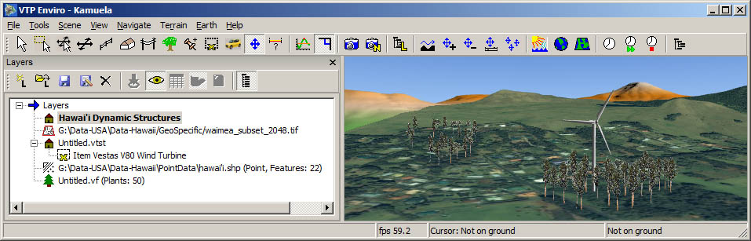

To show or hide the layers dialog, the menu command is File: Layers. The dialog is dockable and floatable, meaning you can move it around and attach it to other sides of the Enviro window, wherever it is most convenient for you.
Different kinds of layers will be displayed depending on whether you are in Terrain View or Earth View.

Several kinds of layers may be used on the terrain:
- Structure Layers
- Abstract Layers
- Image Layers
- Vegetation Layers.
The active layer is shown in bold. You can make any
layer active by clicking on it or any of its items.
These toolbar buttons pertain to terrain layers:
| Button | Command | Notes | |
|---|---|---|---|
|
|
Create New Layer | Can be of type Abstract (Point), Structure, or Vegetation. | |
| Load Layer | |||
|
|
Save Layer | Write the active layer to disk (e.g. to VTST or SHP) | |
|
|
Save Layer As... | ||
| Delete Layer | |||
|
|
Zoom To | Move the camera so that the selected item is in view (for abstract layers, and individual structures). | |
| Toggle Visibility | All layers can be visible or hidden. | ||
|
|
Table of Features | For abstract layers, shows the Feature Info dialog. | |
|
|
Toggle Shadow | Toggle whether the selected item should cast a shadow, if structure shadows are enabled for this terrain. This is per structure, not per layer. | |
|
|
Refresh | For abstract layers, re-loads from disk and re-creates the 3D visuals. | |
| Show All | Shows every item of every layer, which can be slow if you have many thousands. When off, only a summary of the items is shown, e.g. "Buildings: 172, Fences: 4". This makes the dialog much more responsive when there are a lot of items in the scene. |
The layers are abstract (GIS data) layers drawn on the earth as Point or Polyline data. The dialog only displays information about the filename and number of features in each layer.
You can try opening the file Data/PointData/vtp-users.shp to see the locations of the first 3859 VTP recipients.